Your browser doesn't support the features required by impress.js, so you are presented with a simplified version of this presentation.
For the best experience please use the latest Chrome, Safari or Firefox browser.
Reliable Real-time Streaming and Analytics with 'Apache Kafka + ApacheStorm'
Use to navigate
Agenda
- First part Kafka
- Stream processing
- Why Storm?
- Storm, Storm, Storm, and more Storm
- Application - Top N tweets from Kafka
Streaming processing
"process big volume unbound sequence of tuples in realtime."
- Batch (logs, bulk image edits)
- Stream (trading, fraud detection, system monitoring)
- Micro batch (a sequence of small batches, e.g: interact with external systems like elastic search, HBase, etc for performance)
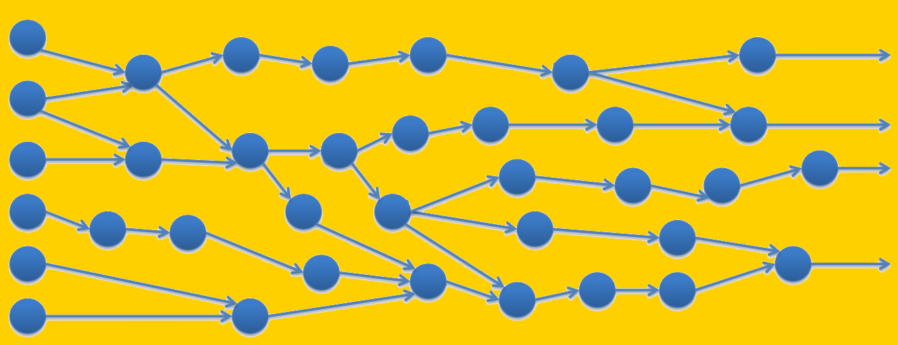
Lambda Architecture
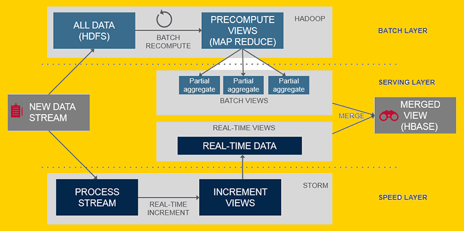
img source: https://www.mapr.com/sites/default/files/otherpageimages/lambda-architecture-2-800.jpg
Problems with queues and workers
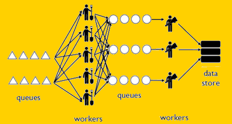
- Consumers additional responsibility
- Worker failures
- Data processing guarantees
- Intermediate queues
- No processing abstraction
- Tough horizontal scalability
img source: http://www.parsely.com/misc/slides/logs/notes/_images/queue_storage.png
Storm
distributed, real-time, computational framework for processing unbounded streams of data.
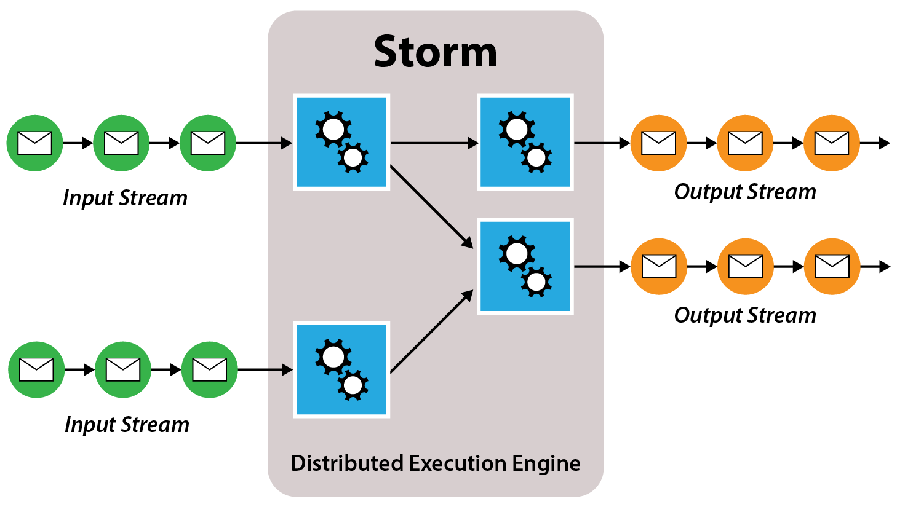
img source: http://www.business-software.com/wp-content/uploads/2014/09/Storm.png
Storm
- fast - 1M+ messages per sec per node
- scalable - thousands of nodes per cluster
- fault-tolerant - failure is expected and embraced
- reliable - guaranteed message delivery {exactly once semantics}. Replay failed messages.
- easy setup - try installing Apache Hadoop
distributed, real-time, computational framework for processing unbounded streams of data.
Storm Vs Hadoop, Spark
- Storm = one at a time / micro batch (trident)
- Map-Reduce = Batch Processing
- YARN - Storm integrates
- Spark - streaming is micro-batching
"use right tools for the right job"
img source: https://shinetechblog.files.wordpress.com/2014/01/big_hilti.jpg
Storm Concepts
Stream
unbounded sequence of tuples
Spouts
source of a stream
normally read data from an external data source and emit tuples
Bolts
process,transform, or compute
optionally emit tuples
Topology
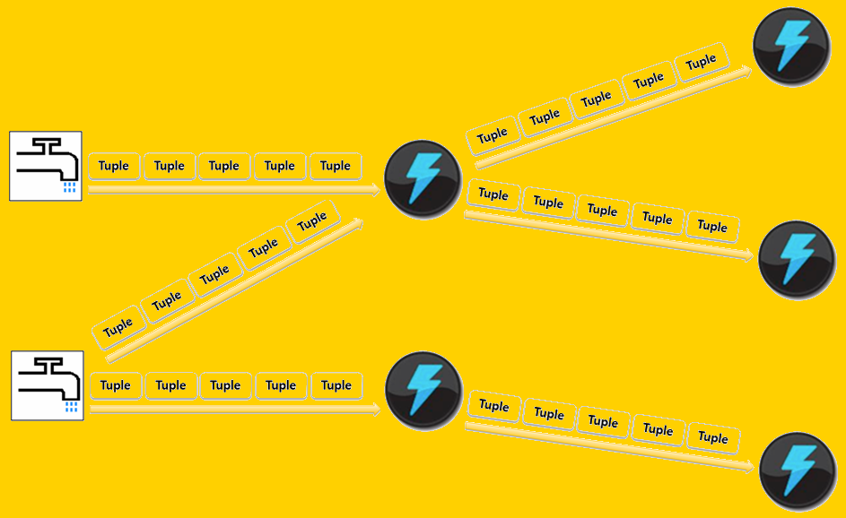
DAG with nodes and edges
- DAG of spouts and bolts
- Nodes: represent some individual computations - bolts/spouts
- Edges: represent the data being passed between nodes - streams
source: http://www.business-software.com
Stream grouping
"how tuples are sent between spouts,bolts"
- Shuffle grouping - randomized round robin
- Fields grouping - Same tuples to same task
- Global grouping - All tuples to same bolt
- All grouping
- Local or shuffle grouping - Shuffle grouping with local worker tasks
- Partial Key grouping
- None grouping
- Local or shuffle grouping
Physical Concepts
Nimbus
Master daemon process
- distributing code
- assigning tasks
- monitoring failures
Supervisors
Worker daemon process
Zookeeper
Stores cluster operational state
Physical View
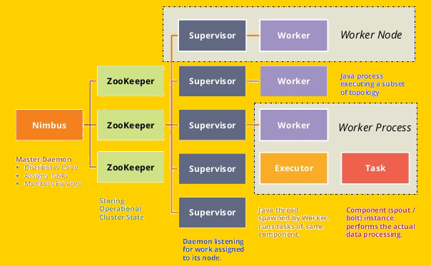
source: http://image.slidesharecdn.com/loggly-what-we-learned-scaling-storm-140825175614-phpapp01/95/what-we-learned-about-scaling-with-apache-storm-pushing-the-performance-envelope-11-638.jpg?cb=1408990694
Getting the job done
- TopologySubmitter uploads topology (jar and config) to Nimbus
- Nimbus calculates assignments and sends to Zookeeper
- Supervisors receive assignment info via zookeeper watchers
- Supervisors download topology from Nimbus
- Supervisors spawn Workers (JVM processes)
- Workers heartbeat back to Supervisors(locally) and Nimbus (via zookeeper)
detail: http://storm.apache.org/documentation/Lifecycle-of-a-topology.html
Fault Tolerance
- Worker dies -- Supervisor restarts it
- Worker dies repeatedly -- Nimbus reassigns work to other node
- Supervisor dies -- Nimbus reassigns work to other node
- Nimbus dies -- No reassignments
Parallelism
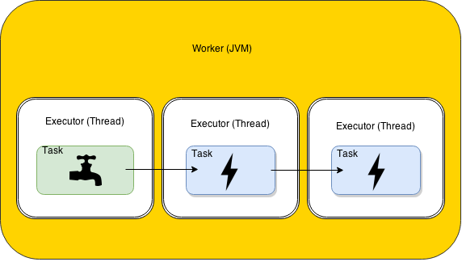
1 worker, parallelism = 1
Parallelism
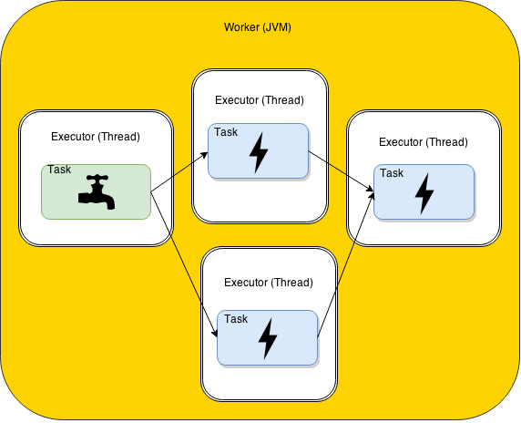
1 worker,2 executors (threads), parallelism = 2
Parallelism
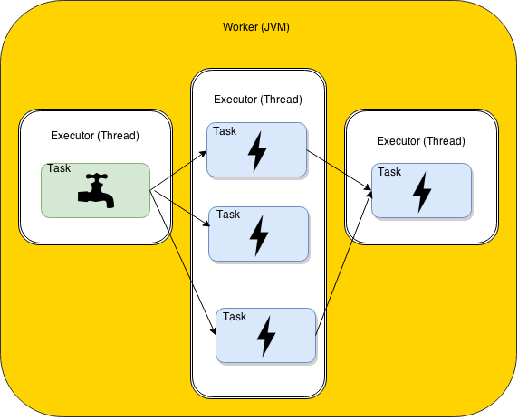
1 worker,1 executors (threads), 3 tasks, parallelism = 3
Parallelism
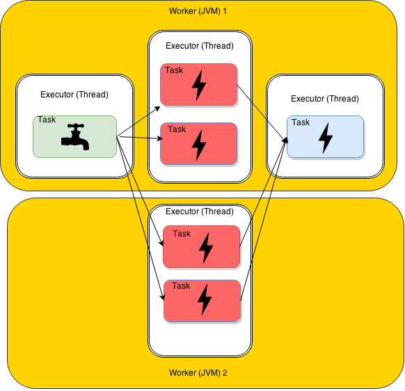
2 workers,2 executors (threads), 4 tasks, parallelism = ?
Reliable processing
- Bolts can acknowledge if tuple is processed.
- Bolts can fail a tuple to trigger spout to replay the original.
Trident
- Fluent, stream oriented API (like PIG)
- User defined functions
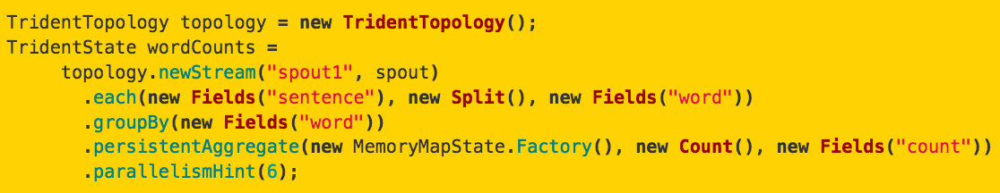
our application Architecture and demo
Real-Time Trending Twitter Topics
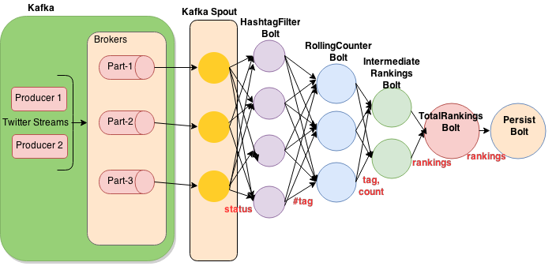
Thank you...
Twitter : @ran_than
http://openscalability.com